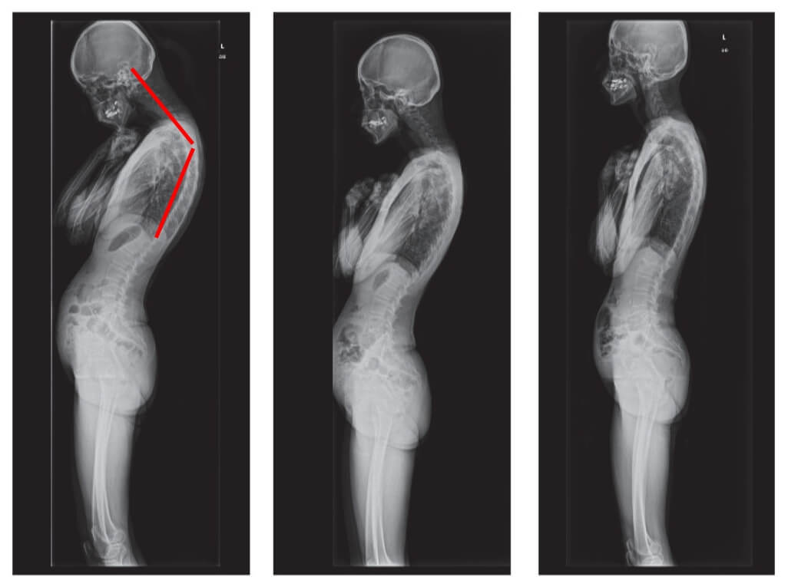
България е изправена пред нова катастрофа: епидемия от инвалидизация. Болките в гърба, които българите с години отдаваха на обикновена умора, днес вече се възприемат като бавна присъда, която не оставя почти никакъв шанс за възстановяване. Дисковите хернии бързо разрушават живота на хората: парализа, загуба на подвижността на краката, както и инвалидна количка за цял живот — това е реалността за онези, които не са разпознали навреме опасността.
Тази ситуация се превърна в лично предизвикателство за проф. Тодор Кантарджиев, който е посветил целия си живот на борбата с възрастово обусловеното износване на ставите и е лекувал не само обикновени хора, но и обществени личности и известни фигури от България, Франция, Германия и дори Съединените щати.
Професорът рядко дава интервюта, като предпочита да посвещава времето си изцяло на пациентите и разработването на нови терапевтични методи. Въпреки това успяхме да получим информация за неговата собствена разработка — метод, способен да активира образуването на нов хрущял, кости и връзки дори при пациенти на 80–90 години.

Проф. Тодор Кантарджиев: „През 2025 г. сме на прага на нова вълна от заболявания на опорно-двигателния апарат, особено по отношение на проблемите с гръбначния стълб. Именно затова разработихме този метод като най-ефективната и достъпна за всеки форма на домашно лечение.
НАШАТА ЦЕЛ Е ОРГАНИЗМЪТ ДА ВЪЗВЪРНЕ СПОСОБНОСТТА СИ ДА ПРОИЗВЕЖДА НОВ ХРУЩЯЛ И ТЪКАНИ — ТАКА МОЖЕТЕ ДА ВЪЗСТАНОВИТЕ УВРЕЖДАНИЯТА НА СТАВИТЕ ДО 98,7%, И ДА СЕ ЧУВСТВАТЕ ЗДРАВИ, КАКТО В МЛАДИНИТЕ СИ."
Проф. Тодор Кантарджиев е убеден, че всеки човек може лесно и без усложнения напълно да възстанови ставите си и да задейства пълната регенерация на хрущяла директно у дома — без лекарства и без скъпи клиники.
И за разлика от други широко разпространени методи на лечение, неговият подход се основава на естествени съставки, БЕЗ ХИМИКАЛИ и вредни вещества, с които са пълни аптеките и които нанасят много повече вреда, отколкото полза.
Масажите и болкоуспокояващите не решават проблема — това е заблуда!
Химическите препарати от аптеката съсипват човека по-бързо от всяка херния или артрит!
Проф. Тодор Кантарджиев:
— Наистина ли смятате, че масажите или болкоуспокояващите могат да спрат разрушаването на ставите и хрущяла? Това е огромна грешка. Аптечните медикаменти не възстановяват тъканите, а дългосрочното действие на химикалите уврежда черния дроб и бъбреците. Организмът не може безкрайно да понася такова токсично натоварване, така че вместо да решите проблема, на практика тровите собственото си тяло!
Особено валидно е това за гръбначния стълб. Всяка става е подложена на износване, но при гръбнака липсата на болкови рецептори може да прикрие вече настъпили сериозни изменения. Притискането на седалищния нерв от херния е изключително болезнен процес: първоначално се проявява като лека болка в кръста, но по-късно болката се разпространява към краката, причинявайки изтръпване и мравучкане, и в крайна сметка води до пълна загуба на подвижността на долните крайници. Напредването на уврежданията може да доведе до парализа на краката, а възстановяването на изгубения контрол става почти невъзможно.
Погледнете тази снимка. Това е гръбнакът на човек едва на 44 години, но изглежда като на тежко възрастен пациент. В миналото подобна степен на разрушение беше характерна след 60-годишна възраст, а днес вече е напълно обичайно явление сред хората, току-що преминали 40-те. С напредването на възрастта тези промени стават все по- тежки — а игнорирането им крие риск от пълна загуба на подвижността!

Болките и неприятните усещания в ставите след 40–50-годишна възраст почти винаги са признак за износване и
разрушаване на хрущяла.
Особено опасни обаче са болките в гърба — поради специфичната структура на хрущялите и междупрешленните
дискове, пълното им износване настъпва 3–4 пъти по-бързо!
Проф. Тодор Кантарджиев:
— Само се замислете! Само за няколко седмици заболяването може да напредне толкова бързо, че притиснатият от херния нерв да стане необратимо увреден, а регенерацията на междупрешленните дискове да загуби всякакъв смисъл! Нервът вече не може да бъде възстановен и ВЪЗСТАНОВЯВАНЕТО НА ДИСКОВЕТЕ НЕ ДАВА РЕЗУЛТАТ! Тогава не остава друг избор — САМО БАСТУНЪТ И ИНВАЛИДНАТА КОЛИЧКА ЗА ЦЯЛ ЖИВОТ!
А единственото, което конвенционалната медицина предлага, е сложна и опасна операция за премахване на хернията и поставяне на метални винтове! Но помислете добре — дори най-добрите хирурзи признават, че операциите на гръбначния стълб са изключително рискови, И ЧЕСТО ВОДЯТ ДО ОЩЕ ПО-ТЕЖКИ ПРОБЛЕМИ, ИНФЕКЦИИ, УСЛОЖНЕНИЯ, А ПОНЯКОГА ДОРИ ДО СМЪРТ!
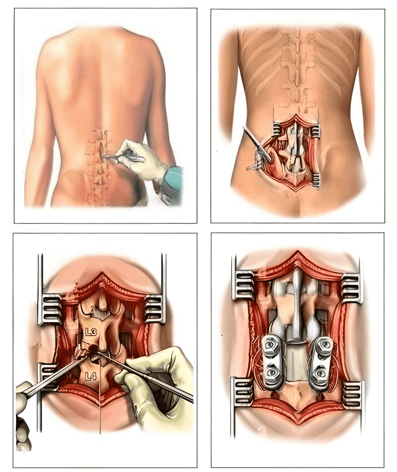
Премахването на херния и поставянето на метални винтове често води до тежки усложнения: рискът от инфекция, ампутация или сепсис се увеличава с 60%. Възстановяването е дълго и болезнено, а вероятността от инвалидизация е изключително висока!Важно е да се отбележи, че след премахване на хернията в 2/3 от случаите проблемът се появява отново в рамките на няколко години, тъй като първопричината остава нелекувана!
А след операцията пациентите често губят не само здравето си, но и последната си надежда за пълноценен живот. Усложненията, хроничната болка, месеците на възстановяване — това е само началото на нова, изпълнена с болка и ограничения одисея!
Пренебрегването на тези признаци води до необратими последици! А ако вече сте над 40–50 години — проблемите са неизбежни!
— Ако сте навършили 40 години и смятате, че ежедневната болка в ставите е „нормална“ — тази заблуда може да ви коства способността да ходите. Само през периода повече от 110 000 души са станали пациенти с диагноза, водеща до инвалидизация, включително 20 000 човека на възраст между 40 и 45 години. Това е реалността: болка, слабост, обездвижване — и всичко това настъпва внезапно. Колко време ви остава? Отговорът зависи от това доколко сте готови да игнорирате симптомите.
Освен това, ако дегенеративното износване на ставите вече е започнало, никакво лечение или таблетки не могат да помогнат.
Представям симптомите, които в практиката ми се доказаха като най-надеждни:
- Скованост сутрин;
- Щракане и пукане при движение;
- Болка при промяна на времето;
- Затруднено сгъване и разгъване;
- Подуване и зачервяване;
- Трудности при изкачване на стълби;
- Постоянно усещане за умора;
- Тежест в крайниците;
- Чести болки в гърба и кръста;
- Дискомфорт и болка при ходене;
- Промени в походката;
Всяка става изисква внимание, но гръбначният стълб е най-важният. Погрижете се за него, преди да настъпят необратими промени. Ето какво се случва с онези, които не се вслушват в сигналите на тялото си: ХЕРНИЯ, ИЗМЕСТВАНЕ НА ПРЕШЛЕНИ, ДЕФОРМАЦИЯ НА ГРЪБНАЧНИЯ СТЪЛБ, ИЗКРИВЕНА СТОЙКА, ПЪЛНА ЗАГУБА НА ПОДВИЖНОСТ. Не чакайте момента, в който дори най-простото движение ще се превърне в мъчение!
Погледнете тези изображения. Така изглеждат хората, които са пренебрегвали симптомите. Днес те са обездвижени, а много от тях нямат дори кой да им помогне в ежедневните грижи. Наистина ли искате такава съдба?
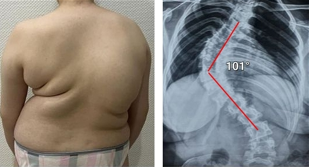

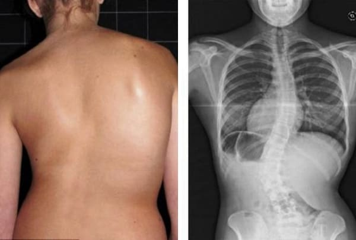
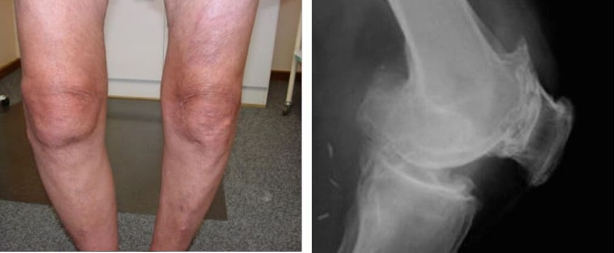
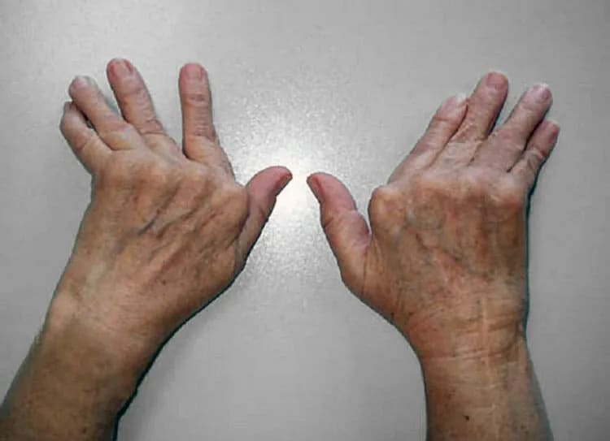
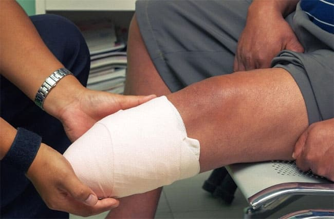
Всеки ден, прекаран със ставна болка, ви приближава до инвалидизация! Хиляди хора вече са загубили подвижността си и са станали инвалиди. Износването на ставите и гръбначния стълб не изчезва от само себе си — действайте сега, преди да е станало твърде късно!
Проф. Тодор Кантарджиев:
— Всички те вярваха, че това няма как да им се случи, но ето резултата: пълна загуба на подвижност, парализа, ампутация, зависимост от постоянна външна помощ и ИНВАЛИДНА КОЛИЧКА! Над 90% от хората стават инвалиди само защото не са предприели правилните стъпки в правилния момент. ВЪЗРАСТОВОТО ИЗНОСВАНЕ НА СТАВИТЕ ЗАПОЧВА НЕЗАБЕЛЕЖИМО — ако игнорирате болката, вие пропилявате собствения си живот!
Помислете добре: ако вече сте над 40 или 50 години, времето да спасите ставите си от по-нататъшно разрушаване е изключително ограничено. Необходимо е спешно лечение! А при хората над 50–60 години почти без изключение е налице КРИТИЧНО СТАВНО УВРЕЖДАНЕ, компресия на нерви и РЪБЪТ НА СРИВ НА ГРЪБНАЧНИЯ СТЪЛБ! Единственият шанс е незабавно да спрете възрастовото износване и да започнете правилно лечение, насочено към образуването на нов хрущял, нови кости и нови тъкани!
Някои от случаите на възстановяване с този метод са наистина впечатляващи! Екатерина Димитрова на 89 години отново се изправи на крака, освободи се от дискова херния, увреждания на коленните стави и артроза благодарение на метода на проф. Тодор Кантарджиев. Ето какво споделя…
След като е посетила десетки лекари, Екатерина Димитрова стига до проф. Тодор Кантарджиев и успява да победи заболяването. През 2019 г. ѝ поставят диагноза множество гръбначни проблеми: херния, нервна компресия и деформация на прешлените. Две години по-късно започват да се увреждат и коленните ѝ стави, а всяко движение причинява непоносима болка. Тя няма близки, но не се отказва и решава да се бори докрай.
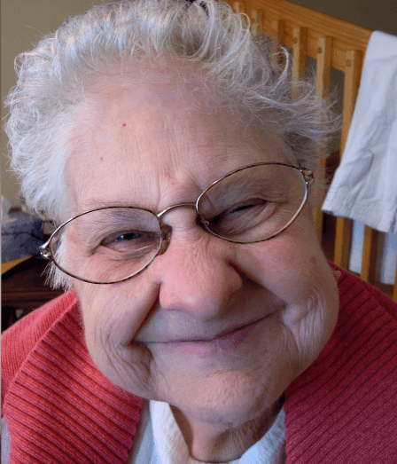
„Никога не съм си представяла, че ще стана обездвижен човек в собствения си дом, напълно сама. Всичко започна със силна болка в кръста, но след две години състоянието ми рязко се влоши — не можех да ходя, а осем месеца по-късно коленете ми напълно отказаха. Буквално пълзях из жилището, защото нямах пари за инвалидна количка и нямаше кой да ми помогне.
Когато ми предложиха операция, вече не вярвах, че някога ще мога да се изправя. Нощем плачех, всичко изглеждаше изгубено… И тогава — слава Богу — някой ми каза да се обърна към проф. Тодор Кантарджиев, който ми изпрати лечението. Само за два месеца и половина отново се изправих. Коленете ми укрепнаха, а болките в гърба изчезнаха!
Изминаха четири месеца и все още не мога да повярвам, че отново се движа! Мога сама да се обслужвам, да ставам и да лягам без чужда помощ. Проф. Тодор Кантарджиев ми върна живота и ще съм му благодарна завинаги.“
Екатерина Димитрова, 89 годиниДруг показателен случай е историята на Николай Петров, който на 44 години получава тежка травма на гръбначния стълб след 15 години тежък физически труд и се оказва в инвалидна количка.
Николай Петров с голяма надежда решава да изпробва метода на проф. Тодор Кантарджиев и само за 3 седмици впечатлява лекуващия си лекар. ГРЪБНАЧНИЯТ СТЪЛБ Е ПОЧТИ НАПЪЛНО ИЗПРАВЕН, БОЛКАТА ИЗЧЕЗНА, А НАЙ-ВАЖНОТО — ТОЙ ОТНОВО МОЖЕ ДА ХОДИ!
Успяхме да разговаряме с него и той сподели следното:
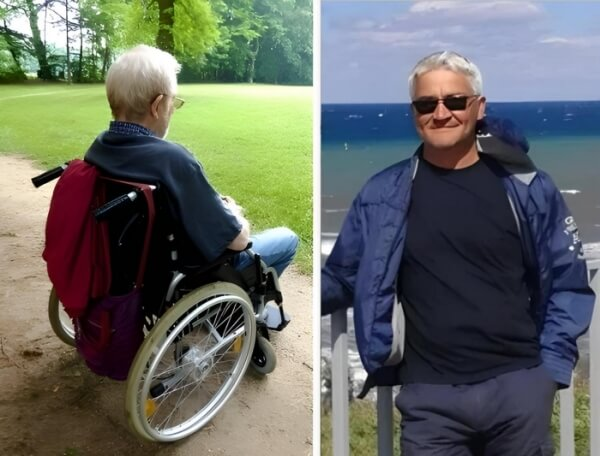
„Благодаря, че ме попитахте. Може би историята ми ще помогне и на други… Преди три години усещах само лека болка в гърба и никога не съм предполагал, че нещата могат да се влошат толкова. Но една нощ се събудих от остра болка в гръбнака — не можех да помръдна, нито да говоря. Съпругата ми, Мария, беше ужасена, а аз не разбирах какво се случва.Не можех дори да отговоря. Никога не бях изпитвал подобно нещо. В крайна сметка се оказа, че става дума за херния четвърта степен. Останах в инвалидна количка. Нямах средства за операция и дори не искам да си спомням онези две кошмарни години…
Но слава Богу, съпругата ми не ме изостави и продължи да се бори! Тя откри проф. Тодор Кантарджиев, изпрати му рентгеновите снимки и именно той ми изпрати лечението.
Само три дни след началото на лечението вече можех да се изправя! Пълният курс продължи 90 дни и днес се чувствам така, сякаш ставите ми са се родили наново. Върнах се на работа и вече не се страхувам от проблеми с гръбначния стълб. Резултатите от образните изследвания са в норма. Ако не беше проф. Тодор Кантарджиев, не знам какво щеше да стане с мен. Безкрайно съм му благодарен, че ме спаси!“
Всеки, който е изпробвал този метод, е успял напълно да възстанови хрущялите си и да си върне свободното движение без болка и дискомфорт. А такива хора вече са хиляди!
Рецептата на проф. Тодор Кантарджиев, която активира регенерацията на хрущяли, кости и връзки и връща състоянието на ставите до нивото на 20-годишна възраст! Не само гръбначният стълб се възстановява, но и всяко друго костно-ставно заболяване!
Проф. Тодор Кантарджиев:
— Ситуацията със ставните заболявания днес е критична и именно затова разработихме тази рецепта. Нейната ефективност е без аналог, защото активира собствените ресурси на организма за образуване на нови хрущялни и костни клетки. Повече от 10 години търсихме тази комбинация и нито таблетки, нито инжекции, нито масажи могат да осигурят подобен ефект!
Самата рецепта не е сложна, но прецизният подбор на съставките е жизненоважен — всеки милиграм има значение. Регенеративните процеси се задействат само ако всички пропорции са спазени точно, тъй като всяка естествена съставка има своята роля. За приготвянето на разтвора следвайте подробно описаните по-долу съотношения.
За приготвяне на една доза са необходими:
- Омега-3 ленено семе: 4500 mg
- Глюкозамин сулфат ракообразни: 1100 mg
- Магнезиев цитрат морски водорасли: 390 mg
- Гингерол джинджифил: екстракт 4200 mg
- AKBA смола от тамян (Boswellia): екстракт 1100 mg
- Силиций полски хвощ: екстракт 320 mg
- Куркумин куркума: екстракт 2300 mg
За съжаление повечето от тези компоненти са изключително трудни за набавяне в България. Освен това много от тях трябва да се поръчват от различни части на света. От решаващо значение е и правилната комбинация в точни пропорции — прецизността на дозировката трябва да бъде до 0,1 mg.
Именно поради тази причина домашното или нелегалното приготвяне на тази рецепта в повечето случаи не води до желания ефект и дори може да бъде напълно неефективно.
Но има и добра новина! Съществува един-единствен продукт, който съдържа всички тези съставки, както и още 29 редки екстракта с доказан благоприятен ефект върху здравето на ставите.
Проф. Тодор Кантарджиев:
— До момента успяхме да създадем само един такъв продукт, като и осигуряването на съставките в големи количества е изключително трудно. Името на продукта е Arthrolix. Към днешна дата това е единственият препарат, който е способен да задейства регенерацията на ставите на клетъчно ниво. Той съдържа всички компоненти в точни пропорции, включително 29 изключително редки екстракта и витаминен комплекс, които многократно увеличават регенеративния капацитет на тъканите. Това е единствената формула, способна да възстанови ставите дори при хора на възраст 60–80 години!

Arthrolix без никакво преувеличение представлява пробив в медицината. Лично ръководих разработката с участието на учени от България, Германия и Съединените щати, а резултатите надминаха всички очаквания. Тайната се крие в уникалната „Хипермолекулярна екстракционна технология“, която разработихме през 2021 г. Този метод позволява извличането на активните съставки с точност до 0,01 nm, което увеличава ефективността им 3,5–5,5 пъти.
„Arthrolix“ е без аналог. Формулата е съставена от най-редките съставки в света, като всяка от тях в точното количество активира регенерацията на ставите. Това е единственият продукт, способен да задейства клетъчна регенерация дори при тежки случаи и в напреднала възраст.
Дори не знам с какво да го сравня — тази формула е наистина уникална. Най-голямото предимство на Arthrolix е способността му да активира образуването на нови тъкани в организма. Активните вещества фино „напомнят“ на клетките първоначалната им способност за делене, което прави възможна регенерацията на ставите, хрущялите и гръбначния стълб дори в напреднала възраст.
Освен това, благодарение на високата концентрация, успяхме да подобрим усвояването на активните вещества в тъканите с близо 400% — така ключовите компоненти достигат много по-бързо до засегнатите зони. Това се дължи на синергията между съставките и на увеличената им сила на действие 15–20 пъти! Това не е преувеличение — продуктът не просто повлиява симптомите, а реално активира клетъчната регенерация.
Arthrolix задейства регенерацията на хрущялната и костната тъкан на всяка възраст благодарение на тези 4 ефекта!
Проф. Тодор Кантарджиев:
— По време на разработката на Arthrolix определихме ключовите стъпки, необходими за регенерацията на ставите и гръбначния стълб, като по този начин осигурихме непрекъснат и ефективен резултат. Тези механизми задействат обновяването на тъканите, възстановяват функцията на ставите и осигуряват дълготрайна защита, достигайки до 98,7% регенерация дори при възрастни пациенти.
4-те основни ефекта на „Arthrolix“:
- Намаляване на болката и възпалението: Още от първото приложение облекчава болката и отока. В рамките на минути активните съставки проникват дълбоко в тъканите, блокират възпалителния процес и намаляват болковите усещания.
- Спиране на възрастовите увреждания: След 2–5 дни употреба „Arthrolix“ спира разрушаването на хрущялната и костната тъкан, като блокира дегенеративните процеси чрез увеличаване на образуването на ставна смазка и намаляване на триенето.
- Активиране на регенеративните клетки: Активира клетките на костите, хрущялите и връзките, стимулира образуването на нови тъкани и клетъчното делене. Това е най-важният етап от терапията, който поставя началото на възстановяването на ставите до здраво състояние.
- Защитна бариера срещу бъдещи увреждания: След 1–2 месеца употреба на „Arthrolix“ се формира траен защитен слой, който прави ставите устойчиви дори при натоварване. След 30 дни редовна употреба ставите получават стабилна защита, осигуряваща ефективна превенция.
Всеки от тези ефекти е резултат от дългогодишни изследвания и прилагането на най-съвременни екстракционни технологии, които позволиха интегрирането на ключовите съставки. Това не е временно решение, а цялостен подход, който осигурява дълготраен резултат и пълна защита на ставите за години напред.
Тестовете на Arthrolix върху реални хора на възраст 40–82 години, проведени от водещи научни екипи в България, Германия и САЩ — резултатите са впечатляващи!
Проф. Тодор Кантарджиев:
— Публикуването на лабораторните ни резултати във водещи медицински списания доведе до истински пробив — водещи държави веднага проявиха интерес към Arthrolix и поискаха да проведат тестове върху свои пациенти. Още тогава стана ясно: формулата притежава огромен потенциал, който доскоро се смяташе за невъзможен. Този метод не просто подобрява състоянието на ставите и гръбначния стълб — той позволява пълно възстановяване дори при тежки възрастови увреждания.
Изследванията върху реални пациенти, проведени във водещи изследователски центрове в България и Германия, завършиха с изключителен успех. Нито един досегашен метод не може да се сравнява с Arthrolix. Този продукт показа резултати, каквито медицината не беше виждала от десетилетия: възстановяване на пълната подвижност, изчезване на болката, спиране на разрушаването на ставите. Лекарите с изумление наблюдават колко бързо пациентите им се връщат към нормален живот — без операции!
Резултати от изследванията на „Arthrolix“ при контролна група от 1980 души на възраст 40–80 години
| Премахване на болката и възпалението | 100% |
| Пълно възстановяване на подвижността | 93,4% |
| Тендинит, бурсит | 97,0% |
| Дегенеративни изменения (намаляване и изчезване) | 98,9% |
| Синовит, лигаментит | 97,6% |
| Остеоартрит | 84,4% |
| Остеопороза | 94,3% |
| Ревматоиден артрит, подагра | 96,9% |
| Артроза, спондилоартрит | 93,0% |
| Пълно възстановяване на хрущяла | 99,4% |
Налични са точните срокове на лечение с „Arthrolix“.
В момента редица международни медицински центрове се опитват да възпроизведат формулата на Arthrolix. Засега обаче това са само лабораторни изследвания, а на практика постигнатите от нас резултати са най-малко 10–15 пъти по-добри. Подобна ефективност просто не може да бъде постигната с традиционните методи.
Колко дълго продължава това лечение? И колко време е необходимо за пълната регенерация на хрущяла, ставите и гръбначния стълб?
Проф. Тодор Кантарджиев:
— Минималният курс на лечение е 30 дни, но при по-тежки случаи може да са необходими 2 или дори 3 месеца. Въпреки това, във всички случаи — без изключение — наблюдавахме пълно възстановяване на ставите, независимо от възрастта и степента на износване. Това е уникална възможност окончателно да спрете възрастово обусловените дегенеративни процеси в тъканите и да се освободите от болката ЗАВИНАГИ!
Освен това Arthrolix не само облекчава болката още В ПЪРВИТЕ МИНУТИ, но е и мощна подкрепа за цялата опорно-двигателна система. Той е ефективен за профилактика, за по-бързо възстановяване след травми и за УКРЕПВАНЕ НА КОСТИТЕ. Но най-важното: буквално ПОДМЛАДЯВА ОРГАНИЗМА, защото връща лекотата на движението и активния начин на живот за дълги години!
Благодарение на „Arthrolix“ повече от 17 000 души в България са се освободили от инвалидизация и са си върнали свободното движение. Ето някои пациенти на проф. Тодор Кантарджиев:


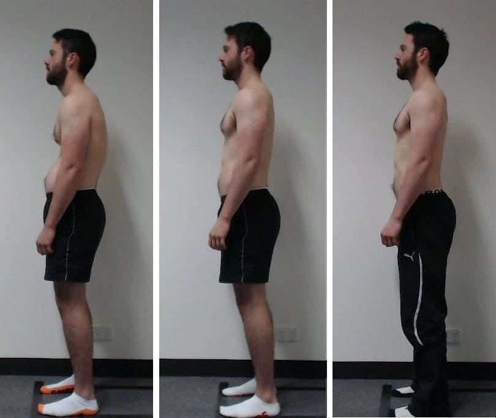
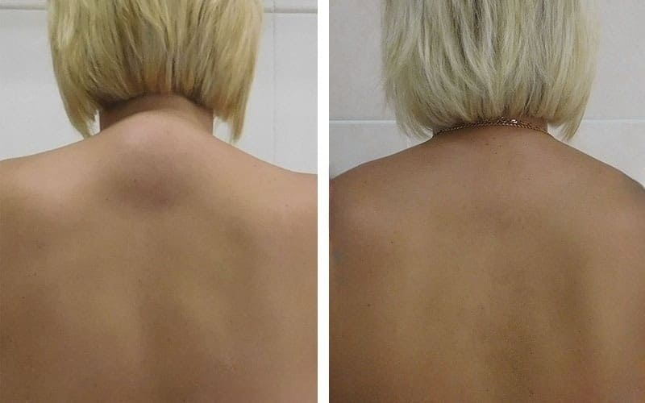

Проф. Тодор Кантарджиев:
— Всички тези снимки доказват, че методът възстановява здравето на ставите дори когато диагнозата вече е звучала като присъда. Без операции, без непоносима болка — всеки пациент постигна трайно подобрение и се върна към пълноценен живот. ТОВА Е ПРОДУКТ, КОЙТО НАПЪЛНО РЕВОЛЮЦИОНИЗИРА ЛЕЧЕНИЕТО НА СТАВИТЕ И ГРЪБНАЧНИЯ СТЪЛБ!
Недостиг и листа на чакащите от 4–6 месеца за Arthrolix! Защо Arthrolix не се предлага в аптеките? Вярно ли е, че се намира изключително трудно?
За съжаление — да. Както вече споменах, производството на Arthrolix е изключително сложен и скъп процес. Физически е невъзможно да се осигури продуктът за всички нуждаещи се. В момента той е достъпен само в ограничени количества — и това е едва малка част от хората, които спешно се нуждаят от лечение.
По мои преценки ще са необходими поне още 3 години, за да стане широко достъпен. Дотогава, поради производствените ограничения, продуктът се предлага само чрез онлайн програми за отстъпки — два пъти годишно. Да, финансирането е ограничено, но преговорите продължават.
Но тази система има и своите предимства — отстъпките могат да достигнат до 50% благодарение на директното участие в програмите за подпомагане. Това е особено важно за пенсионерите, които не могат да си позволят скъпи медикаменти. Съветът ми е: НЕ ПРОПУСКАЙТЕ ПРОГРАМАТА ЗА ПОДКРЕПА — тя е достъпна само няколко пъти годишно.
За да се запишете, моля, добавете онлайн формуляра за поръчка, който идва директно от нашия производител.
Последен шанс да получите Arthrolix още тази година — възползвайте се, преди да ви изпреварят!

Проф. Тодор Кантарджиев:
— Тази година успяхме да осигурим финансиране и да заделим 20 000 опаковки изключително за читателите ви, но това покрива само малка част от реално нуждаещите се. Не пропускайте момента, защото следващата програма за подпомагане започва едва в края на 2026 г. Според условията на програмата всеки жител на България над 40 години може да получи до 50% отстъпка, но програмата приключва на дата 31.12.2025 г. След това няма да има нова възможност.
Сериозните проблеми се появяват внезапно. Не чакайте, докато стане твърде късно! Търсенето на Arthrolix нараства всеки ден! Докато програмата за подпомагане е активна, възползвайте се от възможността да защитите ставите си от възрастовото разрушаване и да запазите здравето си за дълги години. Препаратът има натрупващ се ефект и е достатъчно да се използва веднъж на 5–6 години.
За да участвате в програмата, е необходимо само да въведете името и телефонния си номер във формуляра. Консултант ще се свърже с вас, ще изготви индивидуална програма за лечение и ще организира доставка до всяка точка на България в рамките на 2–3 дни — по пощата или с куриер директно до вратата ви.
Пожелавам на всички крепко здраве! Пазете се! С уважение: проф. Тодор Кантарджиев.
Актуализация: : Поради изключително високото търсене на Arthrolix, разпределените наличности могат да се изчерпят по-бързо от очакваното! Не забравяйте, че днес — 18/12/2025 — е последният ден на програмата или докато наличностите са изчерпани.

Внимание! Не затваряйте и не обновявайте страницата, в противен случай запазеният за вас пакет Arthrolix ще бъде предоставен на друг човек!
Можете да участвате в промоцията — вашето място е запазено: № 19 974
директно до вашия дом

КОМЕНТАРИ:
Мария Георгиева
Много благодаря за информацията! Дълго време пиех болкоуспокояващи и напълно съсипах черния си дроб… От много познати вече бях чувала добри отзиви за Arthrolix. Много се радвам, че попаднах на тази статия и успях да поръчам с голяма отстъпка. Благодаря!
Людмила Стоянова
Получих пратката миналия понеделник. Още след една седмица усещам огромно облекчение! Ще изкарам целия курс. Преди нищо не ми помагаше. Нямам търпение отново да се разхождам в парка с внучето си.

Анна Петрова
На 69 години съм и повече от 2 години имах болки в гръбнака и врата, а после и тазобедрената става „блокира“. Казваха ми, че е от възрастта и трябва да търпя. Изписаха ми различни лекарства, но нищо не помогна. След 2 месеца с Arthrolix гръбнакът ми се възстанови напълно, нервите вече не са притиснати и се движа като в младите си години! Това е истински пробив за ставите. Благодаря!
Цветан Петров
Този продукт ме спаси от тежко изкривяване и постоянни болки в гърба! Работя на бюро, остеохондрозата беше непоносима, лекарите само вдигаха рамене, а Arthrolix буквално ме спаси. Деформацията на гръбнака ми беше много сериозна! По-добре е човек да се погрижи навреме. Ето резултата ми:
Тодор Николов
Лекарят е прав — по-добре е да се лекуваме с природни средства, отколкото да се тровим с химия. В днешно време в аптеките почти няма нищо качествено. Пълна лудост е да се вярва, че болкоуспокояващите лекуват.
Аделина Иванова
Все още се колебая дали да пробвам Arthrolix. Как да знам, че това не е поредното празно обещание? Наистина ли е толкова ефективен? Лекарите ми препоръчват смяна на става…
Инеса Димитрова
Аделина, напълно те разбирам, и аз бях скептична. В крайна сметка реших да опитам заради добрата отстъпка, без да имам големи очаквания. Но след един месец с Arthrolix е все едно ставите ми са се родили наново — не преувеличавам!
Преди едва можех да сгъвам или изправям коляното си, а сега всички стави се движат свободно. Според мен и ти трябва да опиташ! Отново се разхождам с внуците си и съм много щастлива!
Антон Делев
Аделина, спокойно можеш да поръчаш! Аз вече се подготвях за операция по смяна на става. Слава Богу, навреме пробвах Arthrolix и за 2,5 месеца проблемът напълно изчезна.
Клаудия Тодорова
Благодаря за Arthrolix! Използвам го от една седмица за гърба и коленете си и вече усещам облекчение! Ще продължа с 60-дневния курс, сигурна съм, че ще има още по-добър ефект! Отдавна търсех нещо надеждно.
Карла Николова
Забелязах, че при мен започва да се оформя гърбица и много се уплаших! Пробвах различни кремове, мехлеми и лекарства, но нищо не помогна. Arthrolix обаче за месец и половина почти напълно я премахна. Продължавам да го използвам, но резултатът още сега е впечатляващ!

Клаудия Тодорова
Преди имах постоянни болки в гърба, краката ми не реагираха нормално, но Arthrolix промени всичко! Не вярвах, че на 68 години отново ще практикувам йога и ще живея пълноценно! Бог да благослови създателите на този продукт!
Силвия Маринова
По-добре е човек да не чака, докато нещата стигнат дотук! Имах притиснат междупрешленен диск – истински кошмар! Пиеш лекарства, а черният дроб страда. Един познат лекар ми препоръча Arthrolix и още след 2–3 дни болката и отокът изчезнаха. Все още не съм приключила курса, но вече съм изключително щастлива!
Йордан Димов
Отдавна имах проблеми с краката, а преди две години гръбнакът ми напълно отказа. Мислех, че всичко е приключило. Миналата година едва ходех. Не вярвах особено в Arthrolix, но той помогна почти веднага. Чувствам се невероятно – сякаш съм с 30 години по-млад! А съм на 82!
Димитър Филипов
Искрено съжалявам хората, които се борят с подобни проблеми. Аз имах късмет да открия Arthrolix преди половин година. Само за 2 месеца гръбнакът ми се възстанови напълно. Ето резултата:
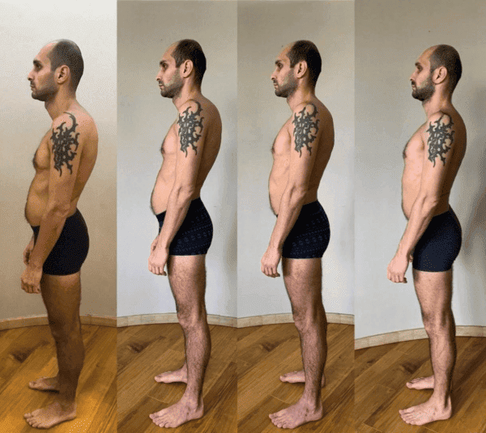
Мариана Костова
Поръчахме Arthrolix за дъщеря ми. Имаше трета степен на изместване на прешлените и ѝ препоръчваха операция, но отказахме. Водихме я при най-добрите лекари в България, изписаха ѝ най-скъпите лекарства, но нищо не помогна така, както Arthrolix. И само за 2,5 месеца тя се възстанови напълно. Невероятно!
Франциско Петров
Съпругата ми дълго време беше прикована към леглото, всеки ден се страхуваше и казваше, че вече не става за нищо… Мислеше, че ще я изоставя. Но аз я обичам повече от живота си! Имахме огромен късмет, че успяхме да поръчаме Arthrolix с 50% отстъпка. Дори не сме си представяли, че ще има такъв ефект: лекуваме я вече 4 седмици и днес за първи път сама излезе да работи в градината, сияеше както преди! Благодаря, че отваряте очите на хората! Не мога да повярвам.
Патриция Ангелова
Поръчах и още вчера ми го доставиха. Веднага след като го нанесох, усетих моментално облекчение! Сякаш коленете ми бяха „смазани“ — движат се много по-леко! Използвам го едва от 3 седмици и вече нямам търпение да видя колко невероятен ще бъде ефектът след пълния курс от 1–2 месеца. Това е пълно обновяване!
Инеса Василева
На 71 години съм и проблемите със ставите и гръбначния стълб започнаха преди около 5 години. Първоначално бяха болки в гърба и врата, които не взех насериозно, но много бързо се стигна до прищипване на нерв! Болката беше толкова силна, че плачех от нея, а понякога дори не ми се искаше да живея… Преди Arthrolix бях изпробвала десетки лекарства — нито едно не даде траен ефект. Но този продукт донесе огромна промяна! За месец и половина гръбнакът ми почти напълно се възстанови, лекарят ми гледаше снимките с недоумение и ме попита какво правя, че съм се подобрила толкова много.

Елиза Борисова
Познавам този лекар — проф. Тодор Кантарджиев. Гледала съм негово интервю по телевизията. Говореше подробно за този метод.
Амалия Филчева
Майка ми ужасно страдаше от артрит! Никой не можеше да ѝ помогне, всички само вдигаха рамене. Нощем се събуждаше и крещеше от болка — беше ужасно да го гледам!!! Сърцето ни се късаше заради нея! Случайно една съседка ни разказа за Arthrolix и веднага го поръчахме. Не вярвахме на очите си, но още след една седмица майка ми започна да се усмихва и да пее, а днес — за първи път от 2 години — успя напълно да стане от леглото!
Arthrolix ми върна майка ми и това е първият продукт, който наистина подейства!!!! Пиша този коментар, за да помогна на хората, които все още се колебаят!
Яков Лазаров
Амалия, след вашия коментар реших да поръчам. Моля, пишете ми по имейл — бих искал да ви задам няколко въпроса как сте използвали продукта. Благодаря.
Зузана Спасова
Има ли някой, който е алергичен към този продукт? Почти към всички лекарства имам алергия — подуват ми се ръцете и краката. Дали и към Arthrolix ще имам реакция?
Артур Боянов
Аз съм алергичен и използвах продукта 2 месеца върху коленете и лактите си, без никаква реакция. Препаратът е хипоалергенен и тестван! А най-важното е, че ставите ми работят много по-добре.
Цветелина Борисова
Преди ми беше изключително трудно да се изправя, излизането от дома беше истински кошмар, страхувах се, че ще падна. Мислех, че ще умра на дивана, гледайки телевизия. Дъщеря ми поръча Arthrolix за мен преди 3 месеца и изкарах целия курс. Сега ставите ми са като нови — танцувам и живея активен живот! Препоръчвам го на всички!
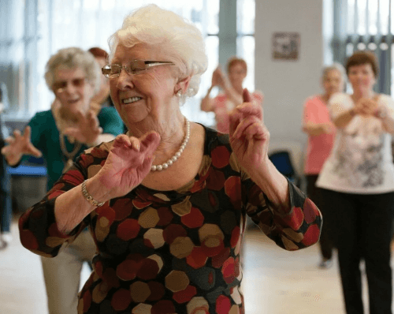
Клара Петрова
Поръчах Arthrolix за баща ми. Заради проблемите със ставите получаваше ужасни главоболия, които сякаш тръгваха от врата. Преди Arthrolix беше постоянно напрегнат и раздразнителен, като че ли седеше върху игли. А сега е спокоен и без болка – помогна му изключително много! Още през втората седмица започна да се усмихва и престана да се оплаква.
Алда Михайлова
Поздравления! Много се радвам, че не се е стигнало до операция! След вашия опит и аз ще поръчам Arthrolix – баща ми има много подобен проблем. Благодаря ви.
Диана Филчева
Защо лекарите не говорят за това в аптеките и кабинетите? Половин България пие болкоуспокояващи заради ставни болки! А ако тези лекарства създават още повече проблеми, какво ще правим тогава?
Агостин Филипов
Защото не им пука за нас. На аптеките им трябва само нашите пари, за да страдаме още и още, и да купуваме отново и отново препарати, които помагат само временно! Още ли не сте го разбрали?
Лидия Монтова
Коментарите много ме впечатлиха и затова реших да поръчам Arthrolix за майка ми. Много е тежко да я гледам как страда… Купих веднага 4 опаковки, за да направим пълен курс. Надявам се да ѝ помогне. Ако толкова хора казват, че действа, значи е истина.
Телма Райчева
Учудена съм, че съществува такъв продукт! И много се радвам на отстъпката. Получих Arthrolix, куриерът го достави за 2 дни. Благодаря за възможността!
Урсула Петрова
Лекарите казаха, че нищо не може да се направи – това било просто от възрастта! Поръчах Arthrolix, благодаря.
Наталия Димова
Никога не съм си мислела, че ще получа 50% отстъпка. Казаха ми, че в рамките на България доставката става до 2 дни. Беше наистина много бързо – останах изненадана.
Ференц Христов
Благодаря! Опитах се да го намеря в аптеките, но ми казаха, че е много рядък продукт и че е по-добре да поръчам Arthrolix директно от този уебсайт.